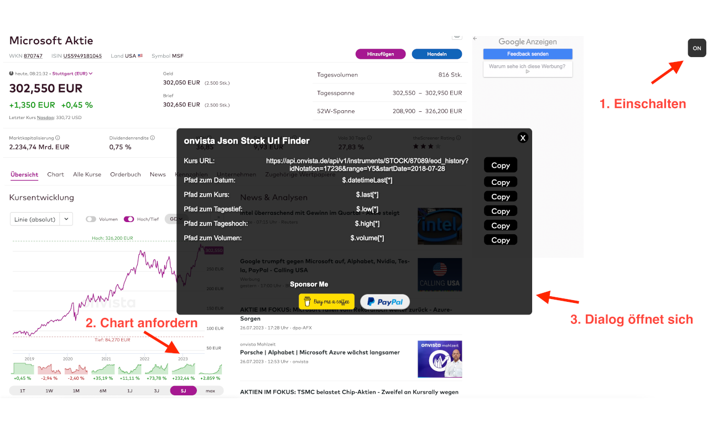

Erweiterung aktivieren
Schalte die Funktion nur dann ein, wenn du neue Kursdaten konfigurieren möchtest.
Kostenlose Chrome-Erweiterung
Übernimm die Kurs-URL und die benötigten JSON-Pfade direkt von OnVista in Portfolio Performance – ohne manuelles Suchen im Netzwerkverkehr.
Weniger Umwege
Die Erweiterung erkennt neue Chart-Anfragen und zeigt die Kurs-URL sowie die benötigten JSON-Pfade in einem übersichtlichen Dialog an. Kopieren, in Portfolio Performance einfügen, fertig.

Drei einfache Schritte
Schalte die Funktion nur dann ein, wenn du neue Kursdaten konfigurieren möchtest.
Wähle Wertpapier, Börsenplatz und Zeitraum. Das Startdatum wird mit der Chart-Anfrage abgeglichen.
Kopiere Kurs-URL, Datums- und Kurspfad direkt in Portfolio Performance.
Passende Daten
Die Kursdaten beziehen sich auf die ausgewählte Börse. Das in der URL enthaltene Startdatum wird mit dem angeforderten Chart-Zeitraum abgeglichen.
"url": "https://api.onvista.de/...""datePath": "$.datetimeLast[*]""closePath": "$.last[*]"Kein separates Entwicklerwerkzeug und keine manuelle Suche nach der richtigen Anfrage.
Die angezeigten Werte lassen sich unmittelbar in Portfolio Performance übernehmen.
Lokal und nachvollziehbar
Keine DatenerhebungDie Erweiterung sammelt, verkauft oder überträgt keine persönlichen Daten.
Kein BenutzerkontoInstallation und Nutzung funktionieren ohne Registrierung.
Offener QuellcodeDie Implementierung kann auf GitHub eingesehen und geprüft werden.
Häufig gefragt
Die erkannte Kurs-URL sowie die Datums- und Kurspfade, die Portfolio Performance für historische JSON-Kursdaten benötigt.
Ja. Die angezeigten Kursdaten beziehen sich auf die bei OnVista gewählte Börse.
Nein. Sie besitzt einen Schalter und kann gezielt aktiviert oder deaktiviert werden.
Nein. Laut Datenschutzangabe im Chrome Web Store werden keine Nutzerdaten erhoben oder genutzt.
Die passenden OnVista-Daten für Portfolio Performance direkt im Browser.
＋ Kostenlos zu Chrome hinzufügen